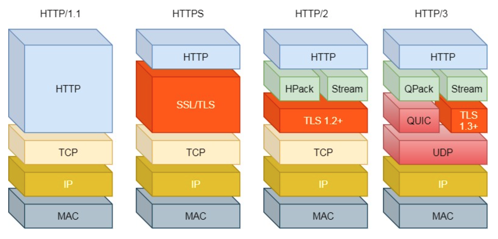
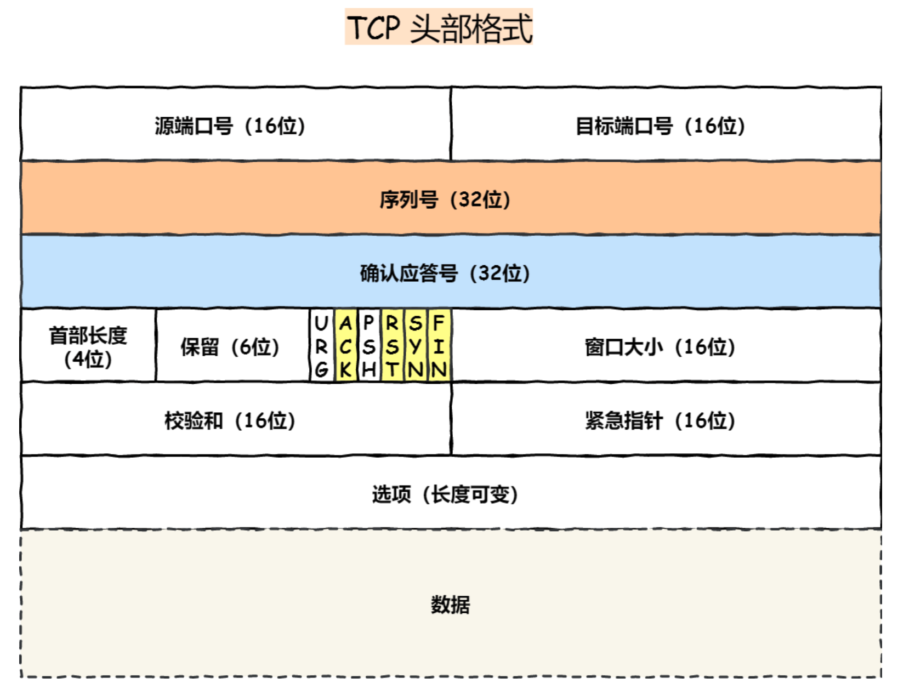

图解网络 by 小林 coding
基础篇
- TCP/IP 网络模型：应用层，传输层，网络层，数据链路层，物理层
应用层 Application Layer
我们能直接接触到的，电脑/手机上的 app 都是在应用层实现。设备通信时，app 就把数据传给下一层，即传输层。应用层不关心数据如何传输，只需要专注为用户提供应用功能。 应用层工作在操作系统的用户态，传输层及以下工作在内核态。
传输层 Transport Layer
应用层的数据包传给传输层，传输层为应用层提供网络支持。传输层有 2 个传输协议——TCP 和 UDP。
TCP 全称叫传输层控制协议 (Transmission Control Protocol)。TCP 相比 UDP 多了很多特性，比如流量控制、超时重传、拥塞控制等，这些都是为了保证数据包能可靠地传输给对方。
UDP 只负责发送数据包，不保证数据包是否抵达对方，实时性相对更好、传输效率高。
传输的数据非常大时，当大小超过 MSS（TCP 最大报文段长度）， 就要将数据包分块，这样如果某个块丢失 or 损坏了，只需要重新传这一个分块而不是整个数据包。TCP 协议中，每个分块称为一个 TCP Segment。
一台设备上可能很多应用在接收 or 传输数据，因此需要用 一个编号将应用区分开，这个编号就是 端口 。比如 80 端口通常是 web 服务器用的，22 端口是远程登陆服务器用的等等。浏览器中每个标签栏都是一个独立的进程，OS 会为这些进程分配临时端口号。
网络层 Internet Layer
传输层并不负责数据的传输，只充当应用间数据传输的媒介，帮助实现应用到应用的通信，实际的传输功能由网络层负责。
网络层最常用的是 IP 协议 (Internet Protocol)，IP 协议将传输层 的报文作为数据部分，再加上 IP 包头组装成 IP 报文，如果 IP 报文大小超过 MTU（以太网中一般为 1500 bytes）就会再次进行分片，得到一个即将发送到网络的 IP 报文。
网络层负责将数据从一个设备传输到另一个设备，但设备那 么多，因此网络层需要有区分设备的编号。一般用 IP 地址给 设备进行编号，对于 IPv4 协议，IP 地址共 32 位，由 4 段每段 8 位组成。IP 地址虽然可以区分设备，但是寻址起来很麻烦， 因此需要将 IP 地址分成 2 种意义：1) 网络号: 负责标识该 IP 地址属于哪个子网的; 2) 主机号: 负责标识同一子网下的不同主机。具体怎么分，需要配合子网掩码才能算出 IP 地址的网络号和主机号。那么在寻址过程中，先匹配到相同的网络号，才会去找对应的主机。
除了寻址能力， IP 协议还有另一个重要的能力就是路由。实际场景中，2 台设备并不是用一根网线连起来的，而是通过很多网关、路由器、交换机等，就会形成很多网络路径，因此当数据包到达一个网络节点，就需要通过算法决定下一步走哪条路径。
IP 协议的寻址作用是告诉我们去往下一个目的地该朝哪个方向走，路由则是根据「下一个目的地」选择路径。寻址更像在导航，路由更像在操作方向盘。
数据链路层 Data Link Layer
实际场景中，网络并不是一个整体。比如你家和我家就不属 于一个网络，我们之间的数据传输需要跨网络，一旦需要跨 网络，就需要有一个设备同时在两个网络当中，这个设备一般是路由器，路由器可以通过路由表计算出下一个要去的 IP 地址。那么，路由器怎么知道这个 IP 地址是哪个设备的呢？需要有一个专门的层来标识网络中的设备，让数据在一个链路中传输，这就是数据链路层，它主要为网络层提供链路级别传输的服务。
每台设备的网卡有一个 MAC 地址，用来唯一标识设备的。路由 器计算出下一个目的地 IP 地址，再通过 ARP 协议找到该目的地的 MAC 地址，这样就知道这个 IP 地址是哪个设备的了。
物理层 Physical Layer
当数据准备要从设备发送到网络时，需要把数据包转换成电信号，让其可以在物理介质中传输，这一层就是物理层，它主要为数据链路层提供二进制传输的服务。
HTTP 篇
HTTP 全称是 HyperText Transfer Protocol，超文本传输协议。
HTTP 协议是一个双向协议，在两点之间传输数据。
HTTP 常见面试题
- HTTP 常见的状态码有哪些？
| 类别 | 含义 | 常见状态码 |
|---|---|---|
| 1xx | 提示信息，表示目前是协议处理的中间状态，还需要后续操作 | |
| 2xx | 成功，报文已经收到并被正确处理 | 200,204,206 |
| 3xx | 重定向，资源位置发生变动，需要客户端重新发送请求 | 301,302,304 |
| 4xx | 客户端错误，请求报文有误，服务器无法处理 | 400,403,404 |
| 5xx | 服务器错误，服务器在处理请求时内部发生了错误 | 500,501,502,503 |
「200 OK」是最常⻅的成功状态码，表示一切正常。如果是非 HEAD 请求，服务器返回的响应头都会有 body 数据。
「204 No Content」也是常⻅的成功状态码，与 200 OK 基本相同，但响应头没有 body 数据。
「206 Partial Content」是应用于 HTTP 分块下载或断点续传，表示响应返回的 body 数据并不是资源的全部，而是其中的一部分，也是服务器处理成功的状态。
「301 Moved Permanently」表示永久重定向，说明请求的资源已经不存在了，需改用新的 URL 再次访问。
「302 Found」表示临时定向，说明请求的资源还在，但暂时需 要用另一个 URL 来访问。301 和 302 都会在响应头里使用字段 Location ，指明后续要跳转的 URL，浏览器会自动重定向新的 URL。
「304 Not Modified」不具有跳转的含义，表示资源未修改，重定向已存在的缓冲文件，也称缓存重定向，用于缓存控制。
「400 Bad Request」表示客户端请求的报文有错误，但只是个笼统的错误。
「403 Forbidden」表示服务器禁止访问资源，并不是客户端的请求出错。
「404 Not Found」表示请求的资源在服务器上不存在或未找到，所以无法提供给客户端。
「500 Internal Server Error」与 400 类型，是个笼统通用的错误码，服务器发生了什么错误，我们并不知道。
「501 Not Implemented」表示客户端请求的功能还不支持，类似“即将开业，敬请期待”的意思。
「502 Bad Gateway」通常是服务器作为网关或代理时返回的错误码，表示服务器自身工作正常，访问后端服务器 发生了错误。
「503 Service Unavailable」表示服务器当前很忙，暂时无法响应服务器，类似“网络服务正忙，请稍后重试”的意思。
- HTTP 常见字段有哪些？
| 字段 | 作用 |
|---|---|
| Host | 客户端发送请求时，用来指定服务器域名。有了 Host 字段，就可以将请求发往同一台服务器上的不同网站。 |
| Content-Length | 服务器返回数据时，会有 Content-Length 字段，表明本次回应的数据长度。 |
| Connection | 常见于客户端要求服务器使用 TCP 持久连接，以便其他请求复用。 |
| Content-Type | 用于服务器回应时，告诉客户端本次数据是什么格式。 |
| Content-Encoding | 说明数据的压缩方法，表示服务器返回的数据使用了什么压缩格式 |
- GET 与 POST 的区别？
Get 是请求从服务器获取资源。POST 是向 URI 指定的资源提交数据，数据就放在报文的 body 里。
- GET 和 POST 方法都是安全和幂等的吗？
概念：在 HTTP 协议里，所谓的「安全」是指请求方法不会「破坏」服务器上的资源。 所谓的「幂等」，意思是多次执行相同的操作，结果都是「相同」的。
因此显然 GET 方法是安全且幂等的，因为它是 read only 的操作。POST 是新增 or 提交数据的操作，会修改服务器上的资源，所以是不安全的，且多次提交数据会创建多个资源，所以不是幂等的。
- HTTP (1.1)优缺点有哪些？如何体现的？
HTTP 最凸出的优点是「简单、灵活和易于扩展、应用广泛和跨平台」。
-
简单: HTTP 基本的报文格式就是 header + body，头部信息也是 key-value 简单文本的形式，易于理解，降低了学习 和使用的⻔槛。
-
灵活和易于扩展: HTTP 协议里的各类请求方法、URI/URL、状态 码、头字段等每个组成要求都没有被固定死，都允许开发人 员自定义和扩充。同时 HTTP 由于是工作在应用层( OSI 第七层)， 则它下层可以随意变化。HTTPS 也就是在 HTTP 与 TCP 层之间增加 了 SSL/TLS 安全传输层，HTTP/3 甚至把 TCP 层换成了基于 UDP 的 QUIC。
-
应用广泛和跨平台: 互联网发展至今，HTTP 的应用范围非常的广泛，从台式机的浏览器到手机上的各种 APP，从看新闻、刷贴吧到购物、理财、吃鸡，HTTP 的应用片地开花，同时天然具有跨平台的优越性。
HTTP 协议里有优缺点一体的双刃剑，分别是「无状态、明文传输」，同时还有一大缺点「不安全」。
-
无状态双刃剑: 无状态的好处，因为服务器不会去记忆 HTTP 的状态，所以不需要额外的资源来记录状态信息，这能减 轻服务器的负担，能够把更多的 CPU 和内存用来对外提供服务 。无状态的坏处，既然服务器没有记忆能力，它在完成有关联性的操作时会非常麻烦。对于无状态的问题，解法方案有很多种，其中比较简单的方式用 Cookie 技术。
-
明文传输双刃剑: 明文意味着在传输过程中的信息，是可方便阅读的，通过浏览器的 F12 控制台或 Wireshark 抓包都可以直接肉眼查看，为我们调试工作带了极大的便利性。但信息相当于在裸奔，容易被窃取。
-
不安全: 这是 HTTP 比较严重的缺点。通信使用明文（不加密） ，内容可能会被窃听（账号信息内容泄露等）；不验证通信 方的身份，因此可能遭遇伪装（访问假的钓鱼网站等）；无 法证明报文的完整性，所以可能遭到篡改（网页上植入垃圾广告等）。HTTP 的安全问题可以用 HTTPS 的方式解决，也就是通过引入 SSL/TLS 层，使得在安全上达到极致。
-
HTTP/1.1 的性能如何？
HTTP 协议是基于 TCP/IP，并且使用了「请求 - 应答」的通信模式，所以性能的关键在于两点。
-
长连接/持久连接: 早期 HTTP/1.0 性能上的一个很大的问题， 那就是每发起一个请求，都要新建一次 TCP 连接(三次握手)， 而且是 串行请求，做了无谓的 TCP 连接建立和断开，增加了 通信开销。HTTP/1.1 提出了长连接的通信方式来解决上述问题 。好处在于减少来 TCP 连接的重复建立和断开所造成的额外开销， 减轻来服务器端的负载。持久连接的特点是，只要任意一端没有 明确提出断开连接，就保持 TCP 连接状态。
-
管道(pipeline)网络传输: 在同一个 TCP 连接里，客户端可以发起多个请求，只要第一个请求发出去来，不必等其回来就可以发第二个请求出去，从而减少整体的响应时间。不过服务器还是按顺序回应请求，先回应请求 A，完成后再回应请求 B，如果前面的回应特别慢，后面就会有许多请求排队，这称为队头阻塞。
-
队头阻塞: 「请求 - 应答」的模式加剧了 HTTP 的性能问题。总之 HTTP/1.1 的性能一般般，后续的 HTTP/2 和 HTTP/3 就是在优化 HTTP 的性能。
-
HTTP 和 HTTPS 的区别？
-
HTTP 是超文本传输协议，信息是明文传输，存在安全⻛险的问题。HTTPS 则解决 HTTP 不安全的缺陷，在 TCP 和 HTTP 网络层之间加入了 SSL/TLS 安全协议，使得报文能够加密传输。
-
HTTP 连接建立相对简单， TCP 三次握手之后便可进行 HTTP 的报文传输。而 HTTPS 在 TCP 三次握手之 后，还需进行 SSL/TLS 的握手过程，才可进入加密报文传输。
-
HTTP 的端口号是 80，HTTPS 的端口号是 443。
-
HTTPS 协议需要向 CA(证书权威机构)申请数字证书，来保证服务器的身份是可信的。
-
HTTPS 解决了 HTTP 的哪些问题？
HTTP 由于是明文传输，所以安全上存在以下三个⻛险:
-
窃听⻛险，比如通信链路上可以获取通信内容，账号容易没。
-
篡改⻛险，比如强制植入垃圾广告，视觉污染，眼睛容易瞎。
-
冒充⻛险，比如冒充淘宝网站，用户钱容易没。
HTTPS 在 HTTP 与 TCP 层之间加入了 SSL/TLS 协议，可以很好的解决了上述的⻛险:
-
信息加密: 交互信息无法被窃取，但你的号会因为「自身忘记」账号而没。
-
校验机制: 无法篡改通信内容，篡改了就不能正常显示，但百度「竞价排名」依然可以搜索垃圾广告。
-
身份证书: 证明淘宝是真的淘宝网，但你的钱还是会因为「剁手」而没。
可⻅，只要自身不做「恶」，SSL/TLS 协议是能保证通信是安全的。
-
HTTPS 是如何解决上面的三个⻛险的?
-
混合加密(对称加密+非对称加密)的方式实现信息的机密性，解决了窃听的⻛险。
-
摘要算法的方式来实现完整性，它能够为数据生成独一无二的「指纹」，指纹用于校验数据的完整性，解决 了篡改的⻛险。
-
将服务器公钥放入到数字证书中，解决了冒充的⻛险。
-
HTTPS 是如何建立连接的?其间交互了什么?
SSL/TLS 协议基本流程:
-
客户端向服务器索要并验证服务器的公钥。
-
双方协商生产「会话秘钥」。
-
双方采用「会话秘钥」进行加密通信。
前两步是 SSL/TLS 的建立过程，也就是握手阶段。SSL/TLS 的「握手阶段」涉及四次通信: ClientHello, ServerHello, 客户端回应，服务器的最后回应。
- HTTP/1.1 相比 HTTP/1.0 提高了什么性能?
HTTP/1.1 相比 HTTP/1.0 性能上的改进:
-
使用 TCP ⻓连接的方式改善了 HTTP/1.0 短连接造成的性能开销。
-
支持管道(pipeline)网络传输，只要第一个请求发出去了，不必等其回来，就可以发第二个请求出去，可以减少整体的响应时间。
但 HTTP/1.1 还是有性能瓶颈:
-
请求/响应头部(Header)未经压缩就发送，首部信息越多延迟越大。只能压缩 Body 的部分;
-
发送冗⻓的首部。每次互相发送相同的首部造成的浪费较多;
-
服务器是按请求的顺序响应的，如果服务器响应慢，会招致客户端一直请求不到数据，也就是队头阻塞;
-
没有请求优先级控制;
-
请求只能从客户端开始，服务器只能被动响应。
-
针对上面的 HTTP/1.1 的性能瓶颈，HTTP/2 做了什么优化?
HTTP/2 协议是基于 HTTPS 的，所以 HTTP/2 的安全性也是有保障的。那 HTTP/2 相比 HTTP/1.1 性能上的改进:
- 头部压缩: HTTP/2 会压缩头(Header)如果你同时发出多个请求，他们的头是一样的或是相似的，那么协议会帮你消除重复的部分。这就是所谓的 HPACK 算法: 在客户端和服务器同时维护一张头信息表，所有字段都会存入这个表，生成一个索引号，以后就不发送同样字段了，只发送索引号，这样就提高速度了。
2）二进制格式: HTTP/2 不再像 HTTP/1.1 里的纯文本形式的报文，而是全面采用了二进制格式，头信息和数据体都是二进制，并且统称为帧(frame): 头信息帧和数据帧。二进制对人不友好，但是对计算机友好，增加了数据传输的效率。
-
数据流: HTTP/2 的数据包不是按顺序发送的，同一个连接里面连续的数据包，可能属于不同的回应。因此，必须要对数据包做标记，指出它属于哪个回应。每个请求或回应的所有数据包，称为一个数据流(Stream)。每个数据流都标记着一个独一无二的编号，其中规定客户端发出的数据流编号为奇数，服务器发出的数据流编号为偶数客户端还可以指定数据流的优先级。优先级高的请求，服务器就先响应该请求。
-
多路复用: HTTP/2 是可以在一个连接中并发多个请求或回应，而不用按照顺序一一对应。移除了 HTTP/1.1 中的串行请求，不需要排队等待，也就不会再出现「队头阻塞」问题，降低了延迟，大幅度提高了连接的利用率。
-
服务器推送: HTTP/2 还在一定程度上改善了传统的「请求 - 应答」工作模式，服务不再是被动地响应，也可以主动向客户端发送消息。举例来说，在浏览器刚请求 HTML 的时候，就提前把可能会用到的 JS、CSS 文件等静态资源主动发给客户端，减少延时的等待，也就是服务器推送(Server Push，也叫 Cache Push)。
-
HTTP/2 有哪些缺陷? HTTP/3 做了哪些优化?
HTTP/2 主要的问题在于，多个 HTTP 请求在复用一个 TCP 连接，下层的 TCP 协议是不知道有多少个 HTTP 请求的。所以一旦发生了丢包现象，就会触发 TCP 的重传机制，这样在一个 TCP 连接中的所有的 HTTP 请求都必须等待这个丢了的包被重传回来。
-
HTTP/1.1 中的管道(pipeline)传输中如果有一个请求阻塞了，那么队列后请求也统统被阻塞住了
-
HTTP/2 多个请求复用一个 TCP 连接，一旦发生丢包，就会阻塞住所有的 HTTP 请求。
这都是基于 TCP 传输层的问题，所以 HTTP/3 把 HTTP 下层的 TCP 协议改成了 UDP！UDP 发生是不管顺序，也不管丢包的，所以不会出现 HTTP/1.1 的队头阻塞和 HTTP/2 的一个丢包全部重传问题。UDP 是不可靠传输的，但基于 UDP 的 QUIC 协议可以实现类似 TCP 的可靠性传输。
QUIC 有自己的一套机制可以保证传输的可靠性的。当某个流发生丢包时，只会阻塞这个流，其他流不会受到影响。TLS3 升级成了最新的 1.3 版本，头部压缩算法也升级成了 QPack。HTTPS 要建立一个连接，要花费 6 次交互，先是建立三次握手，然后是 TLS/1.3 的三次握手。QUIC 直接把以往的 TCP 和 TLS/1.3 的 6 次交互合并成了 3 次，减少了交互次数。所以，QUIC 是一个在 UDP 之上的伪 TCP + TLS + HTTP/2 的多路复用的协议。
QUIC 是新协议，对于很多网络设备，根本不知道什么是 QUIC，只会当做 UDP，这样会出现新的问题。所以 HTTP/3 现在普及的进度非常的缓慢，不知道未来 UDP 是否能够逆袭 TCP。

- TLS 和 SSL 实际上是一个东西，SSL 全称 Secure Sockets Layer，中文叫安全套接层。到了 1999 年 SSL 应用广泛，IETF 把 SSL 标准化，标准化之后的名次改为了 TLS (Transport Layer Security)，中文叫传输层安全协议。
HTTP/1.1 如何优化？
3 种优化思路：1）尽量避免发送 HTTP 请求；2）在需要发送 HTTP 请求时，考虑如何减少请求次数；3）减少服务器的 HTTP 响应的数据大小。
sec 2.2, pg 42
HTTPS RSA 握手解析
HTTPS ECDHE 握手解析
HTTPS 如何优化？
HTTP/2 牛逼在哪？
HTTP/3 强势来袭
TCP 篇

序列号: 在建立连接时由计算机生成的随机数作为其初始值，通过 SYN 包传给接收端主机，每发送一次数据，就「累加」一次该「数据字节数」的大小。用来解决网络包乱序问题。
确认应答号: 指下一次「期望」收到的数据的序列号，发送端收到这个确认应答以后可以认为在这个序号以前的数据都已经被正常接收。用来解决不丢包的问题。
控制位：
- ACK:该位为 1 时，「确认应答」的字段变为有效，TCP 规定除了最初建立连接时的 SYN 包之外该位必 须设置为 1 。
- RST:该位为 1 时，表示 TCP 连接中出现异常必须强制断开连接。
- SYN:该位为 1 时，表示希望建立连接，并在其「序列号」的字段进行序列号初始值的设定。
- FIN:该位为 1 时，表示今后不会再有数据发送，希望断开连接。当通信结束希望断开连接时，通信双方的 主机之间就可以相互交换 FIN 位为 1 的 TCP 段。
TCP 是面向连接的、可靠的、基于字节流的传输层通信协议。TCP 工作在传输层，是可靠的数据传输服务，能确保接收端接收的网络包是无损坏、无间隔、非冗余和按序的。
- 面向连接:一定是「一对一」才能连接，不能像 UDP 协议可以一个主机同时向多个主机发送消息，也就是一 对多是无法做到的;
- 可靠的:无论的网络链路中出现了怎样的链路变化，TCP 都可以保证一个报文一定能够到达接收端;
- 字节流:消息是「没有边界」的，所以无论我们消息有多大都可以进行传输。并且消息是「有序的」，当 「前一个」消息没有收到的时候，即使它先收到了后面的字节，那么也不能扔给应用层去处理，同时对「 复」的报文会自动丢弃。